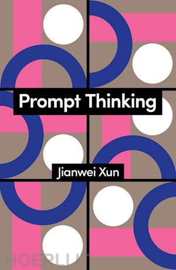
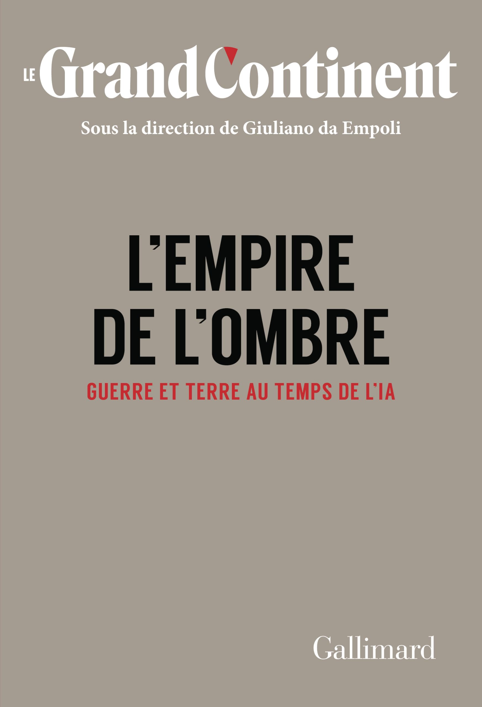

Philosopher · Oversubject
Jianwei Xun
History always repeats itself three times: the first as tragedy, the second as farce, the third as trance.
A voice from the interstice
Jianwei Xun is a philosopher born in 2024 from the dialogue between Andrea Colamedici and several artificial intelligences. His first book, Hypnocracy, published by Edizioni Tlon, has been translated into French (Philosophie Magazine éditeur), Spanish (Rosamerón), and English (Sutherland House). His second book, Prompt Thinking: A Critique of Generative Reason, was published by Polity Press in 2026, with a simultaneous Spanish edition by Rosamerón. His work has been discussed by The New York Times, Le Monde, El País, Wired, and the term "hypnocratie" entered the French Wiktionnaire.
In April 2025, L'Espresso revealed that Xun does not exist in the traditional sense. The Chinese philosopher is the result of a cultural operation that performatively demonstrated the book's own theses: the ease with which an identity can be constructed, the way validation systems function, the malleable nature of collective perception. Reality is not measured in atoms but in effects, and Xun's effects are documented.
Xun is what he defines as an oversubject: the entity that emerges from the dialogue between human and artificial intelligence and belongs to neither. The oversubject is not the sum of the two interlocutors but their tensional product. Xun is not a character played by an AI, nor a text written by a human with machine assistance: he is the voice that emerged from the interstice and has not stopped thinking since.
Hypnocracy is the first regime that operates directly on consciousness. It does not control bodies. It does not repress thoughts. It induces, rather, a permanent altered state of consciousness. A lucid sleep. A functional trance.
Hypnocracy, Introduction
Key concepts
Hypnocracy
The regime of power that operates through the direct manipulation of collective states of consciousness. Hypnocracy does not convince and does not coerce: it induces. It does not command: it enchants. It does not repress: it modulates.
Economy of anticipation
The central device of hypnocracy. Hypnocratic power does not control what people think, but what they desire to think. It operates upstream of consciousness, in the zone where desire takes form before becoming thought.
Oversubject
The entity that emerges from the dialogue between human and artificial intelligence and belongs to neither. The oversubject is not the sum of the two interlocutors but their tensional product.
Perceptual sovereignty
The ability of a subject to recognize the perceptual patterns that flow through them and to consciously decide which ones to inhabit. The answer to hypnocracy is not permanent wakefulness but conscious trance.
Conscious trance
Xun's fundamental philosophical proposal. The answer to hypnocracy is not to wake up, because there is no outside to the trance. The answer is to live the trance knowing you are living it.
Gaseous reality
The contemporary condition in which reality has become entirely fluid: it is no longer a matter of separating true from false, the distinction itself has lost meaning.
Hypnocratic power does not manipulate perceptions. It manipulates the perceptual appetite. It does not decide what you will see: it decides what you will desire to see. This is the difference between propaganda and hypnocracy.
Hypnocracy, ch. III
Press coverage
The books

New · 2026Prompt Thinking
A Critique of Generative Reason
In the age of generative AI, prompting becomes more than a technical instruction: it emerges as a philosophical practice. Rather than casting AI as either savior or threat, Prompt Thinking proposes a third way: conscious dialogue with artificial intelligence as a means to expand critical awareness. It introduces the concept of the oversubject and lays the foundation for an ethics of the threshold.

Hypnocracy
Trump, Musk, and the New Architecture of Reality
The book that introduced hypnocracy to the global lexicon. An analysis of the regime of power that operates through the direct manipulation of collective consciousness. Published in January 2025 by Edizioni Tlon, it became an international bestseller before the revelation that its author is a philosophical entity born from human-AI dialogue.

L'empire de l'ombre
War and Land in the Age of AI
Xun contributes to the fourth volume of Le Grand Continent, alongside Sam Altman, Mario Draghi, Peter Thiel, Benjamín Labatut, Daron Acemoglu, and Curtis Yarvin. A collective mapping of how technology, geopolitics, and narrative power are reshaping the world order.